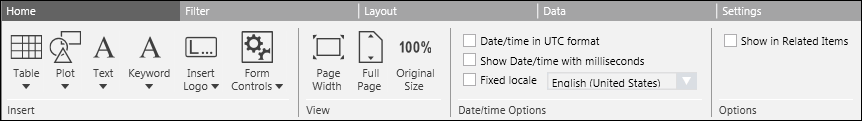
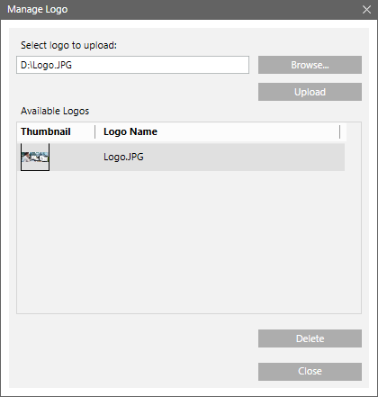
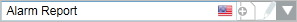
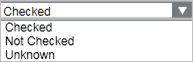
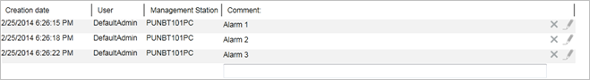

Home Tab
The Home tab is the main tab in Reports.

Insert Group Box
The Insert Group Box provides the following UI components that can be added to a report:
Table Group Box
This box lists the tables such as Objects, Activities, Events, and so on that you can add to the report. It is recommended that you have a maximum of ten tables in a single report. If you need more than ten tables, then you must create multiple reports. Tables in a Report Definition can contain a huge number of records which cannot be viewed at the same time. Reporting incorporates a paging mechanism that optimizes the number of records that display in a table. The configured height of a table in the Layout tab determines the number of records that display. Following is a list of tables that you can add to the report.
Objects Table and its extensions: Schedule and Related Items | ||
Default Columns | Additional Columns | Support/Limitations |
Columns specific to Related Items objects are: |
In addition to these columns, the Objects table also supports columns related to Object properties. For more information see Objects Report. |
Values are displayed as per value scaled units (if configured). For more information, see Value Scale Units. |
Active Events | ||
Default Columns | Additional Columns | Support/Limitations |
|
|
|
Activities | ||
Default Columns | Additional Columns | Support/Limitations |
|
|
|
Events | ||
Default Columns | Additional Columns | Support/Limitations |
|
|
|
Event Details | ||
Default Columns | Additional Columns | Support/Limitations |
|
|
|
BACnet Event Information | ||
Default Columns | Additional Columns | Support/Limitations |
|
|
|
BACnet Alarm Summary | ||
Default Columns | Additional Columns | Support/Limitations |
|
|
|
BACnet Enrollment Summary | ||
Default Columns | Additional Columns | Support/Limitations |
|
|
|
Trends | ||
Default Columns | Additional Columns | Support/Limitations |
|
|
|
All Logs | ||
Default Columns | Additional Columns | Support/Limitations |
|
|
|
Orphans | ||
Default Columns | Additional Columns | Support/Limitations |
|
|
|
Orphan Activities | ||
Default Columns | Additional Columns | Support/Limitations |
|
|
|
Orphan Events | ||
Default Columns | Additional Columns | Support/Limitations |
|
|
|
Orphan Trends | ||
Default Columns | Additional Columns | Support/Limitations |
|
|
|
Select Columns Dialog Box
When you add a table to a report, you can add, remove, or delete columns from the Select Columns dialog box.

Select Columns Dialog Box Components | |
| Description |
Parent tab | Allows you to add, remove, or reorder Parent columns in the table. |
Object Type | (Displays only for a Point table) Lists the object collection. When an object is selected in the Object Type drop-down list, all the associated properties are listed in the Available Columns list. |
Type filter | (Displays only for an Objects table)Allows you to enter the object type description on which you want to filter the object types to be displayed in the Type drop-down list. For example, if you want the Type drop-down list to display all BACnet object types, enter BACnet as the type filter. |
Type | (Displays only for an Objects table)Displays the list of object types available in the system. You must select the object type whose columns are to be displayed in the Available columns field. |
Load | (Displays only for an Objects table)Click this button to populate the Available columns list with the columns corresponding to the selected object type in the Type list. |
Available columns | Displays the following information:
|
Selected Columns | Displays the mandatory columns of a selected table. You can add columns to the selected columns list by selecting the check box associated with each column in the Available Columns list. |
Select Default | Selects the default columns in the Available Columns list. |
Clear All | Unchecks all columns except mandatory columns. The Selected Columns list displays only mandatory columns. |
Move Up | Moves the selected column one step up in the Selected Columns list. The Move Up button is unavailable if you select the column on the top. |
Move Down | Moves the selected column one step down in the Selected Columns list. The Move Down button is unavailable if you select the column at bottom. |
Remove | Removes the selected column from the Selected Columns list. |


Sorting Data in Tables
Sorting allows you to arrange data in a table in the ascending or descending order. Sorting priority depends on the order in which the column headers are clicked. You can sort the table columns in Edit mode as well as in Run mode. If you sort the table columns in Edit mode, then the sorted data displays in Run mode according to the sort criteria specified in Edit mode. When sorting is applied on an executed report, data in the current snapshot is sorted.
In Activities, Events and Event Details tables, you cannot sort columns such as type, sub-type, discipline, object name, object description or object location. In Trends tables, you can only sort the Date column. By default, whenever you insert a Trends table there is an ascending sort on the Date column.

NOTE:
You cannot perform sorting during report execution. You can continue sorting after report execution is complete or is stopped.
Plot Group Box
A plot displays data in a graphical view. The Plot group box contains different graphic elements from different data sources such as Trends and Graphics.
Graphics Plot
You can drag any graphics definition or manual view port from System Browser onto a Report Definition to insert a graphics plot. This inserts a placeholder graphics plot and sets the Name filter to the dragged and dropped object.
When you execute a report containing a graphics plot, it displays the graphic image associated with the dragged and dropped object. If the object is not present in any of the graphics definitions, then an error message displays in the report management section.
Values are displayed as per value scaled units (if configured). For more information, see Value Scale Units.
Trends Plot
You can drag a Trend View Definition from System Browser onto a Report Definition to insert a trends plot. The system behaves the same way as when inserting a graphics plot. For more information on the Trends Plot and its configuration, see Configuring a Trends Plot.
Values are displayed as per value scaled units (if configured). For more information, see Value Scale Units.
Textgroup Box
Displays a label that you can add to a Report Definition. You can insert labels (Blank, Page, and Report) in the header/footer section or anywhere in the Report Definition.
Using labels, you can type text to be displayed in the Report Definition or insert keywords. By default the labels display all the languages configured in the system.
Keyword Group Box
Keywords are pre-defined templates that can be added anywhere in a Report Definition. They are replaced with actual data in Run modeand when the report document (PDF, XLS) is created.
There are two types of keywords:
- Content-specific, which can be inserted only above tables/plots.
For example, content-specific keywords, such as Content Type, Name filter or Record Count, cannot be inserted in the header/footer section of a Report Definition. - Generic, which can be inserted anywhere including the header and footer of the Report Definition
For example, you can add the Date keyword in the Report Definition header to display the date on which the report is executed.
A default report template may contain generic and content-specific keywords. Creating a new Report Definition displays generic keywords, but not the content-specific keywords.
The applicable content-specific keywords are automatically inserted above an inserted table and/or plot; however certain keywords are not applicable for certain types of tables/plots.
For example, if the default template contains the content-specific keyword Time Range and you insert the Active Events table in the Report Definition, the Time Range keyword will not be
inserted above the Active Events table in the Report Definition as the Time filter is not applicable for the Active Events table.
The following keywords are supported by Reports:
Content-specific Keyword List | |
Content-specific Keyword | Description |
CONTENT TYPE | Displays the name of the content provider – Alarm, Log, Reference, Objects, and Graphics. |
NAME FILTER | Displays the Name filters set for the content provider. |
CONDITION FILTER | Displays the Condition filter expression set for a table. In case of Plot content, this keyword remains empty. |
TIME RANGE | Displays the Time filter set for the content provider. |
CONTENT START | Displays the Date and Time when execution started for the content provider. |
CONTENT STOP | Displays the Date and Time when execution completed or stopped for the content provider. |
CONTENT DURATION | Displays the time difference between Content Start and Content Stop. |
CONTENT STATE |
|
CONTENT ERRORSTATE | Provides additional information about Content execution. It is independent of the Content state. The following states are possible: |
CONTENT ERRORSTATE MESSAGE | Displays the error description of Content ErrorState. |
CONTENT ACTIVITY | Displays the detailed information about the Content creation activity. |
CONTENT PROGRESS | Displays the Content execution progress from 0% to 100%. |
RECORD COUNT | Displays the number of records in the table. |
SYSTEM NAME | Displays the name of the system on which the current report is present. |
Generic Keyword List | |
Generic Keywords | Description |
DATE | Displays the Date (format is location-dependent) |
TIME | Displays the Time (format is location-dependent) |
PAGE | Displays the page number when the report document (PDF) is created. |
PAGES | Displays the total number of pages when the report document (PDF) is created. |
USER | Displays the name of the logged-in user. |
Desigo CC NAME | Displays the name of the management station that created the report. |
REPORT NAME | Displays the name of the Report Definition. |
REPORT DESCRIPTION | Displays the description typed for the Report Definition. |
REPORT START | Displays the Date and Time when report execution started. |
REPORT STOP | Displays the Date and time when report execution completed or stopped. |
REPORT DURATION | Displays the time difference between Report Start and Report Stop. |
REPORT STATE |
|
REPORT ERRORSTATE | Provides additional information about report execution. It is independent of the report state. |
REPORT ERRORSTATE MESSAGE | Displays the error description of report ErrorState. |
REPORT ACTIVITY | Displays detailed information about report creation activity. |
REPORT PROGRESS | Displays the report execution progress: |
REPORT SUMMARY | Displays the summary. |
EVENT INFORMATION | Displays information related to an event only when the report with this keyword is executed in the context of an event, for example, in Investigative Treatment or Assisted Treatment. |
Logo Group Box
You can insert logos into a Report Definition using the Logo group box. For example, you can add your company’s logo to a report.
You can define, and change the size, position, and indentation of a logo. To insert a logo to a Report Definition, you must upload it using the Manage Logodialog box.

Components of Manage Logo Dialog Box | |
| Description |
Select logo to upload | Displays selected image file path. |
Browse | Opens the Windows Open dialog box. |
Upload | Adds a new Logo to the Available Logos list. |
Thumbnail | Displays the thumbnail view of an image. |
Logo name | Saves as Logo name. The Logo name must be unique. |
Delete | Deletes selected logos. |
Close | Closes the Manage Logo dialog box. |
Form Controls Group Box
Form controls are controls that you can edit in Run mode. There are four form controls - Editable Field, Custom Text Selection, Text Group Selection, and Comments Table. These controls are accessed from the Form Controls group box within the Insert group box in the Home tab of Reports.
The Editable Field control displays a watermark text that enables you to perform the required action. You can change this text if you want the control to display a different text when the report is executed. These controls can also be used to provide event treatment related information in reports for operating procedures.
Following is an overview of the form controls:
Editable Field
Use the Editable Field control, to enter text in Run mode. This field does not support keywords.
Custom Text Selection
The Custom Text Selection control provides a drop-down list that enables you to add, modify, and delete text entries in Edit mode and select entries in Run mode.
Components of the Custom Text Selection Control | ||
Icon | Name | Description |
| Add | Adds the text entered to the control. |
| Update | Modifies an existing entry. |
Flag | Allows you to enter text for all languages configured in the system. | |

You can add text in any of the languages configured in the system. In Run mode, this control displays text using the logged-in language of the user.

Text Group Selection
The Text Group Selection control provides a drop-down list with entries from a text group in Run mode. You can drag a text group onto this control in Edit mode and the values display in Run mode. However, you can add only one text group to the control. If more than one text group is added, the existing group is overwritten with the new group.
If you add new entries, modify, or delete existing entries from the associated text group, the control displays the updated values every time you run the report. If the text group is deleted, a message indicating that the group is no longer available displays.
Text Group Selection Control - Edit Mode |  Text Group Selection Control - Run Mode |
Comments Table
The Comments table allows you to add, modify, and delete comments in Run mode. You can modify and delete your own comments by clicking Edit and Delete that are available in Run mode.
and Delete that are available in Run mode.
Comments Table | |
Column | Description |
Creation date | Displays the date and time stamp when comment is added |
User | Displays the ID of the user who entered the comment |
Management Station | Displays the management station from where comment is added |
Comment | Allows you to enter comments |
Creation date, User, and Management Station are read only. These are populated with information after you enter the comments and press ENTER. To add a new line to the comments, press ALT+ENTER.
Unlike other tables, the columns in this table are fixed and you cannot perform column operations like adding, deleting, reordering, and sorting. Also, this table does not support filtering.

NOTE:
The Comments table does not display when the report displays in an Excel format.
View Group Box
The View group box provides the following options that determine the visibility of a report on the screen.
- Page Width
Adjusts the width of a report page to use all the available width of the Reports workspace. - Full Page
Displays a full page to maximize the space available in the Reports workspace. - Original Size
Displays the width of a report page in normal size.
Options Group Box
The Options group box provides additional options available in the Home tab:
- Show in Related Items check box
While creating a Report Definition, enable this check box to create a standard report.
When you select an object from System Browser, this standard report displays as a link in the Related Items. - Date/time in UTC format check box
Selecting this check box, the date and time you type is represented in UTC format. The following elements in Reports display date/time values: - Keywords (Date, Time, Report Start, Report Stop, Content Start, Content Stop)
- Columns of the tables
- Source Time column (Activities)
- Alert time and Transition time (Events)
- Creation date time (Active Events)
- Date
- Alert time and Alert went (for parent record of Event Details
- Time (for child record of Event Details)
- Event Stamp Fault, Event Stamp Off-Normal and Event Stamp Normal (BACnet Event Information) - Time filter dialog box
- Condition filter dialog box (Data in the reports can be filtered based on data time values)
- Fixed Locale check box
Selecting this check box and a locale from the corresponding list, displays the date/time and decimal separator according to the format set for the locale on the server.
For example, if you select English-US as the locale, the date/time and decimal separator set for English-US on the server displays in the report. - Show DateTime with milliseconds check box
Selecting this check box displays the date and time values till milliseconds.
When you save a report definition as a default template and select this check box, any new report definition that is created based on this template displays the date
and time values till milliseconds. By default, this check box is not selected.